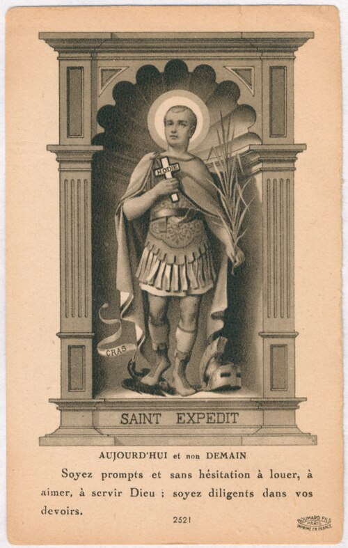

Prayers, novenas & offerings
The petition-and-thanks "contract," the novena, and what devotees offer — red flowers, pound cake, coins, water, and public gratitude.

Whatever the register — parish Catholic or hoodoo rootwork — devotion to Expedite runs on one distinctive structure: a contract. You ask, you promise, and once granted, you pay and publicise.
The contract
Practitioner — The bargain has three beats:
1. Petition — state the need, plainly and urgently. He is the saint of speed; you are meant to ask for a fast, specific result. 2. Promise — name what you will give in return, and often when. 3. Thanks made public — once the favour comes, you must pay the promised offering and announce the gratitude publicly (the historic New Orleans newspaper notice; today, an online gratitude post). Withholding the thanks is held to invite his displeasure — and, on Réunion, his feared retribution.
The novena
Practitioner — The common form is a nine-day novena, one prayer a day, frequently timed to conclude on a 19th (his monthly day) or on 19 April. Naples preserved a compressed "flying novena" for students facing examinations.
Offerings
Practitioner — What devotees actually leave:
- Red flowers — the oldest attested New Orleans offering (Hyatt, 1935–39), and the colour of Réunion's whole cult.
- Pound cake — the famous New Orleans payment, "feed the saint."
- Coins and water — common on home altars.
- The thousand prayer cards — Brazil's promessa do milheiro (see Latin America).
- A published thank-you — the non-material offering that completes every version of the contract.
Folk-magic refinements
Practitioner / commercial — In the hoodoo tradition a set of finer conventions circulates (documented by practitioner suppliers, and reliable as evidence of practice, not doctrine): placing his image by a door; working with him on Wednesdays (the day of Mercury, messenger and speed); a triangular altar layout; even coercive folk tricks like paying only half the offering up front, or turning the statue upside-down until he delivers. The Lucky Mojo product line — oils, incense, vigil candles "for luck in a hurry" — is the commercial expression of the same impulse.
Note — These are described here as what practitioners do, not as instructions or guarantees. The wiki records the tradition faithfully; it does not adjudicate whether it works.